Reading: Chapter 9, 10, 11
Planetary geology
TODO
- in class participation 3 points
- Why does Saturn have rings?
We have discussed how the Solar system formed, and how the architecture of the planets, the smaller bodies, and their orbits supports the "disk-mediated bottom-up" process. But this means that the planets themselves contain clues about their formation!
Much like we can learn a lot about what an object is made of from its shape, we can learn something about the interior of planets from their surfaces!
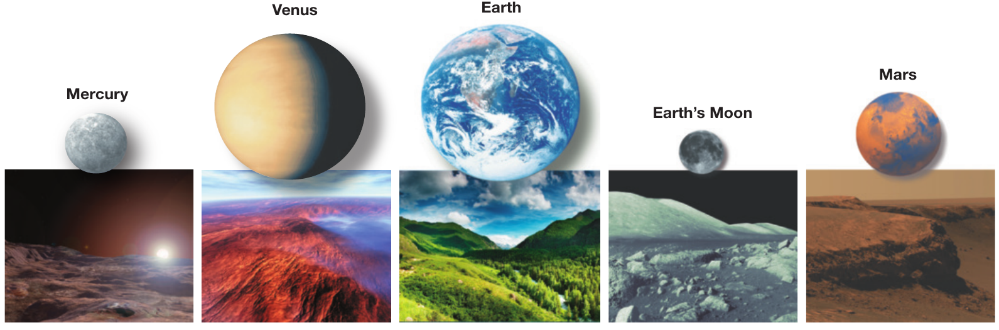
Even on Earth, the deepest hole ever dug to date is the Kola superdeep borehole, at an impressive 12 km depth. This is out of a radius of the planet of ∼ 6000 km! We literally only have scratched the surface, and we can learn a lot about our own planet comparing with other bodies!
A planets sources of energy
Planets receive on their "day-side" energy in the form of radiation from the Sun (or their host star for exoplanets). However, depending on the properties of the planet, this energy does not penetrate very deep (maybe 100s of km at best). While it is crucial in driving both weather (you know it's colder at night!) on the surface, irradiation from the host star is not the main source of energy in the inside of a planet. Nevertheless, on Earth geological activity (volcanoes, earthquakes, etc) is direct evidence that there is energy (the ability to "move things") stored there!
Residual thermal energy from formation
As planets accreted matter from the protoplanetary disk, typically through a disk because matter interacts with itself as it falls and conserves the total angular momentum, it also accretes thermal energy (the source is the gravitational potential energy of the infalling matter). Part of this residual accretion heat is still trapped in planets and acts as an energy source.
Differentiation
Imagine to pour oil in a glass of water, in a messy way, and then let it sit for a long time. The oil would progressively rise at the top, because it is less dense – there is a buoyancy pushing it up. This process releases some energy (it was effectively excess gravitational potential energy of the water temporarily above the oil).
Similar things can occur in a planet (or a star!), although the time to wait is literally geological (100s of millions to billions of years, as old as the Solar system!). This process of rearrangement is called differentiation, and is also a source of energy in a planet
Radioactive decay
Add the radioactive decay of material the planet is made of (tapping into the nuclear energy stored in the structure of those nuclei), and you have all three major sources of heat in a planets interior.
Energy transport
N.B.: The concept we introduce here to discuss the structure of planets are exactly the same to discuss the structure of stars.
The total energy in the interior of a planet discussed above ultimately produces the thermal emission of the planets, typically peaking in the infrared (the details depend on the temperature of the last layer of the planet from where photons can escape).
This means planets lose energy (or cool) from the surface: energy must be moving from the interior outwards. Roughly speaking, energy in a blob of matter can move in three main ways:
Conduction
Matter, especially if solid, doesn't have many moving parts to carry energy. The most movable are the electrons in the outskirts of molecules/atoms bound in crystals.
Energy transport by motion of electrons is called conduction. Metals are good at conducing heat because their electrons are typically quite "loose" and this is why they heat up evenly even if only one part is left in the Sun.
Radiation
A medium in which light can pass (remember that light has many wavelengths!), energy can be carried by photons. This is typically more important in stars and outer layers of planets than their interior.
Convection
This is when energy is carried by bulk motion of matter: convection implies there s some stuff going up and some stuff going down, with one of the two sides carrying more energy even if the mass cancels out. Bulk motion of matter, no net mass flux, but with an energy flux.
This is an instability meaning convection kicks in only if the other possible energy transport are insufficient.
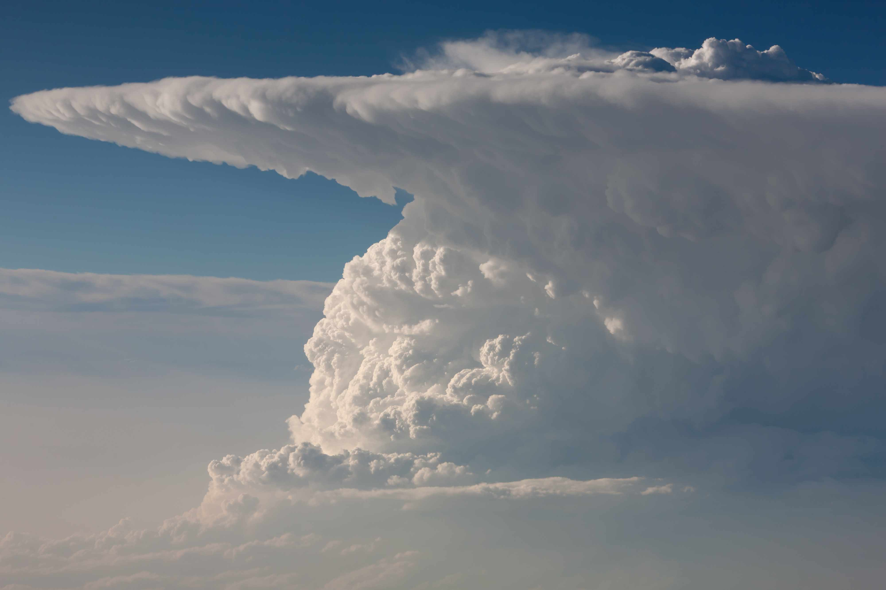
A common misconception is that water boiling is exhibiting convection: that is not exactly correct. Water boiling is by definition a phase transition from liquid to gas, however, shortly before the phase transition occurs, it is true that conduction in the water is typically insufficient to carry the energy release at the bottom, and convective motion can be spotted as a small simmering of the water breaking down into small waves at the surface.
It's maybe easy to picture convection in gas (atmosphere) and liquid (water "simmering" just before it starts boiling with large bubbles), but in planetary interiors, even solid can participate in convection! This is a very slow motion (compared to for example the thermal velocities), but unstoppable!
Geological timescales are comparable to the age of the planets, that is the age of the Solar system, up to ∼4.5 Billion years. Many processes can take hundreds of millions of years to shape a planet.
The fact that even rock over long timescales behaves like a fluid! We can thus study the evolution of the surface of a planet to learn about their formation, evolution, and outer conditions!
Why are planets spheres?
If we wait geological times, in a planet, which by definition is self gravitating, fluid rock will shape itself to minimize the gravitational potential it has. In other words it will "fall on itself at the lowest possible height".
Gravity is a central force, only depends on \(r\)
so the shape that minimizes the energy is a sphere, the region of space equidistant from a point, the center.
For non self-gravitating bodies, e.g., small asteroids, the shape is determined by the detailed properties of the matter they are made of.
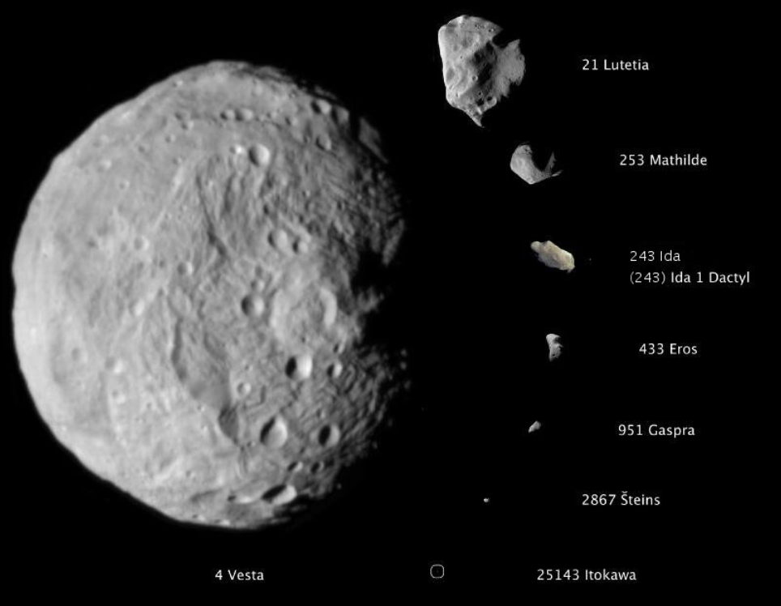
Different planets → different structures → different surfaces
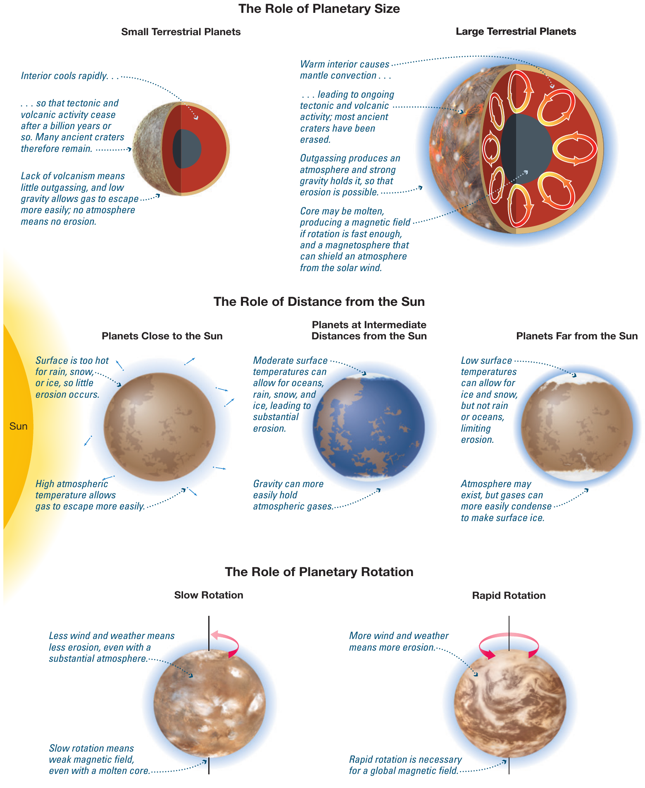
Since heat storing scales with volume, but heat losses scale with surface, larger planets hold on to more of the heat released at their formation by the accretion of matter. This makes weather on them particularly violent!
Earth's structure
The Earth is a medium size rocky planet, with a fast rotation rate (once every 23h56m∼24h). It has an atmosphere (decaying exponentially, conventionally defined to be 100 km thick), and a surface (70% covered by water), a solid crust, a thick mantle liquid below some depth, and a core partially liquid.
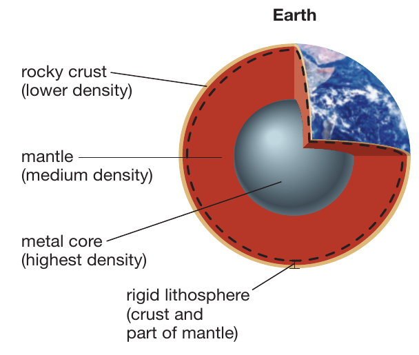
Shaping the surfaces
impact cratering
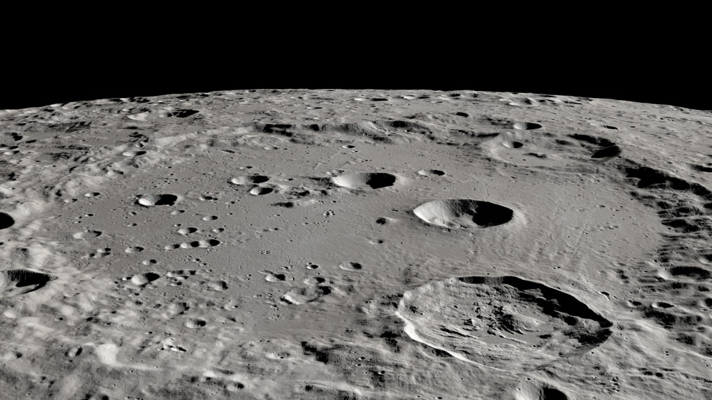
Depending on the pressure of the magma (which becomes lava onces it is out in the surface),Dating age with craters, heavy bombardment!
Volcanism
When liquid pockets of magma are squeezed upwards, or just rise through rocks and pierce through the crust, a volcano forms. The example below is an eruption from mount Etna in Sicily (Italy) this year:
Depending on the pressure of the magma (which becomes lava onces it is out in the surface), there are different morphologies of volcanoes even on a single planet like Earth (think of the linear volcanoes in Iceland versus monutains like Mount Vesuvius).
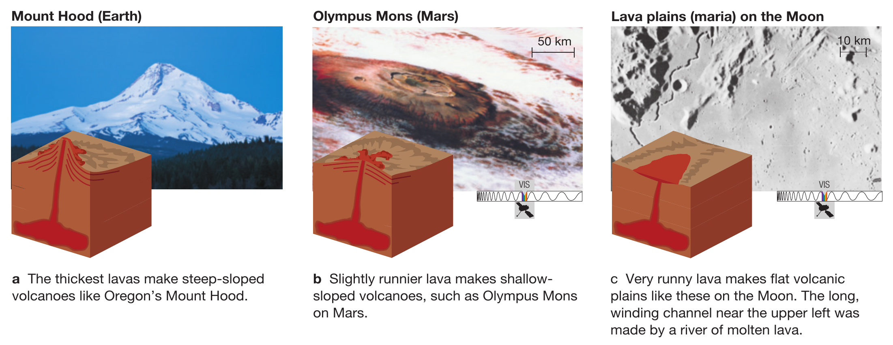
Tectonics
Tectonic plates are slabs of solid rock "floating" over the mantle of a planet, and slowly drifting, bumping in each other, sinking, and rising. This is driven from below by convection in the mantle!
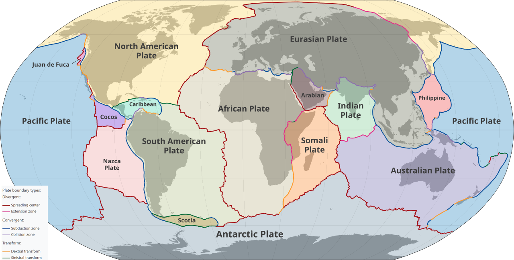
The boundaries between the plates are often areas of relative instability, with outflows in the form of volcanoes (great pacific ring of fire), earthquakes (notoriously, California or Nepal).
Whether tectonics occurs on bodies other than Earth can be studied in the Solar System. For instance, Moon missions have left radio detectors, which allow to measure its size very precisely and detect its shaking: the Moon has no tectonic because it has already lost most of its formation residual energy.
Erosion
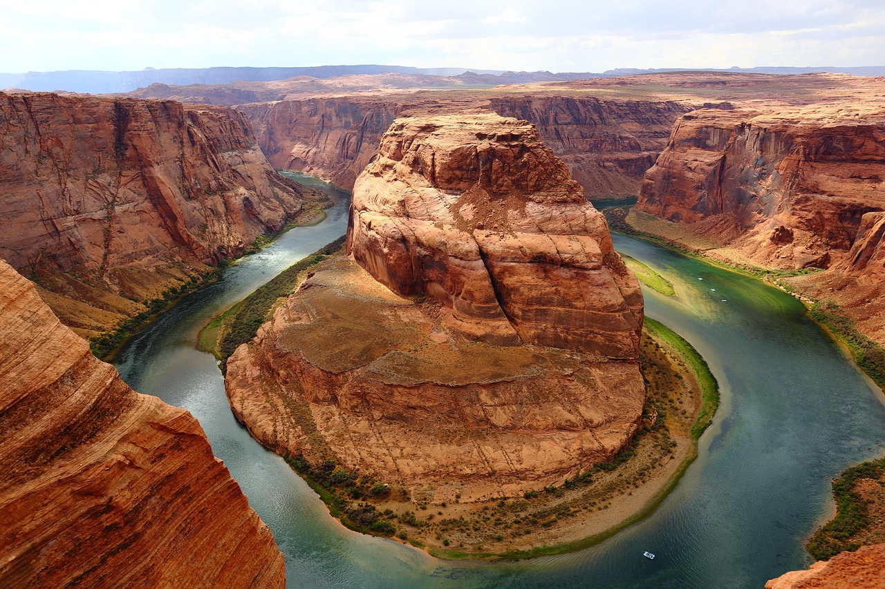
By water (including in solid form: ice glaciers!) and other atmospheric agents. It of course requires a planet to have (or at least have had) an atmosphere for this to occur.
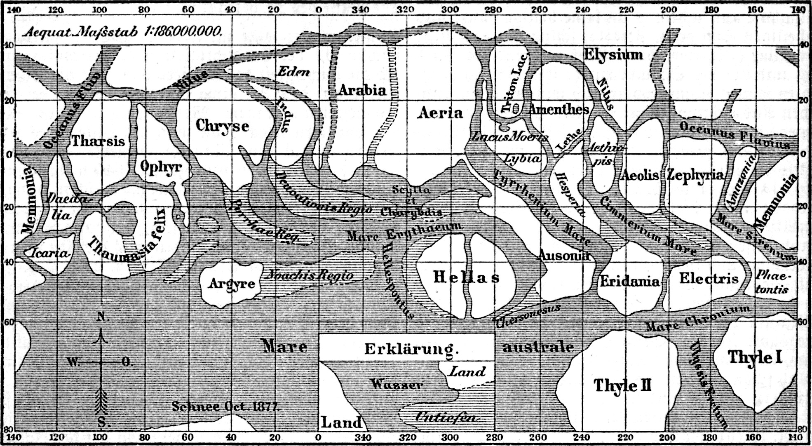
Magnetosphere
Much like velocity is defined in a reference frame, and depending on the observer's relative velocity to it an object can be moving or static, magnetic fields and electric fields are related like motion and static depending on the observer. The bottom line is that magnetic fields in planetary context are generated by electric currents.
Thus, for a planet to have a magnetic field it requires a source of energy, and a mechanism to generate currents, for example fast rotation! This is not enough, there should be something that can carry the current, like liquid metal.
As we have seen the residual heat from formation (gravitational collapse), and to a smaller degree the radioactive decay of trapped heavy unstable elements act as source of heat in planets. This causes convection (transport of heat by macroscopic motion). If rotation is fast and the planet is not "too stiff", meaning there is a liquid layer, rotation "twists" the convection generating currents which make a magnetic field.
The Earth's meets these conditions, its magnetic field roughly has a North-South direction (that's because Earth's rotation is involved in generating it!), so it can be used to navigate by compass.
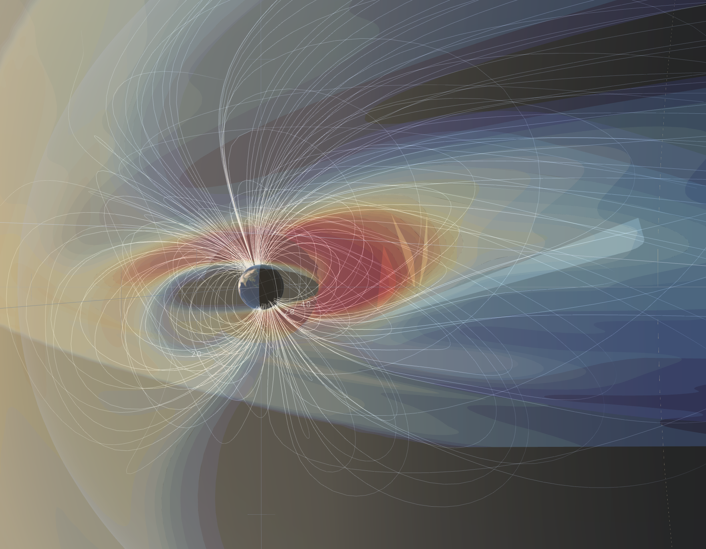
On a planetary scale, it protects the Earth from the solar wind: this is a stream of high energy protons investing us. Protons are charged and a moving electric charge is deflected by magnetic fiels (Lorentz force).
This visualization shows the pressure around the Earth as a function of the impinging wind (mostly protons) constantly escaping from the Sun.
The magnetic field of a planet can accelerate particles from the solar wind (typically protons) and make them smash into molecules in their atmosphere, causing aurorae. This website shows forecast predictions on the probability of aurorae based on the Sun's activity.
N.B.: We can literally see what was happening at the surface of the Sun 8 light-minutes ago, because that is the time it takes a photon traveling at the speed of light to cover the Sun-Earth distance (1 au). The protons of the solar wind are more slower than photons, so we can use this to help predicting some of the solar wind variability.
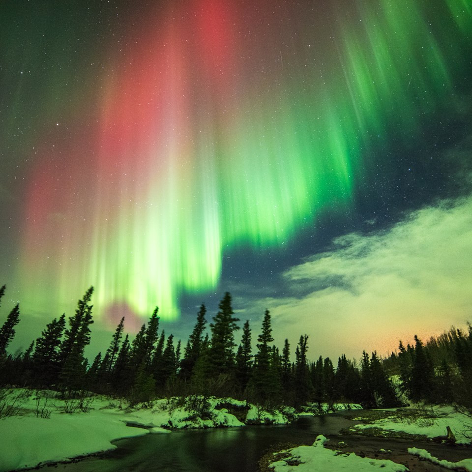
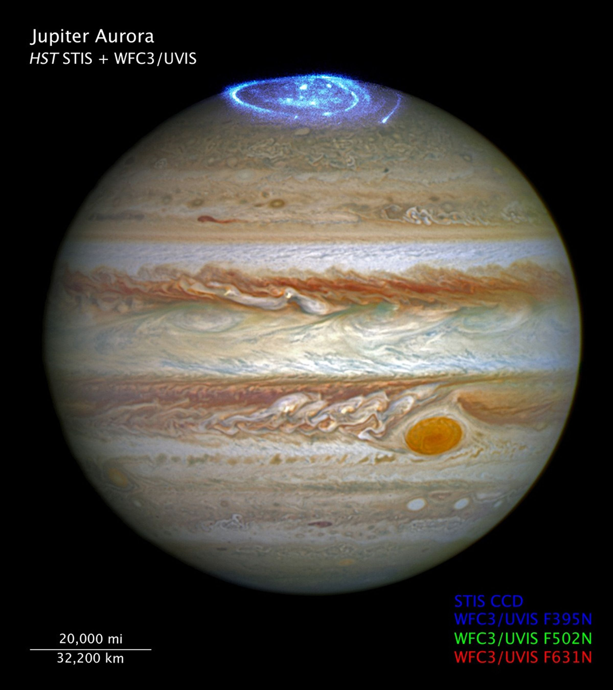
What if there is no "surface"?
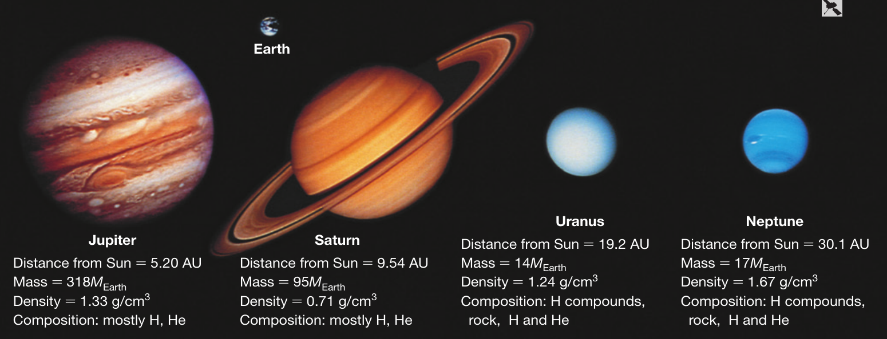
So far you probably imagined surfaces as something roughly solid. However, some planets do not have any solid surface at all: the gas giants!
Although these have formed starting from solid planetesimal cores, these may have since melted/vaporized under the extreme pressure of all the gas they have accreted.
- rotational support
- Jupiter storm (next lecture)